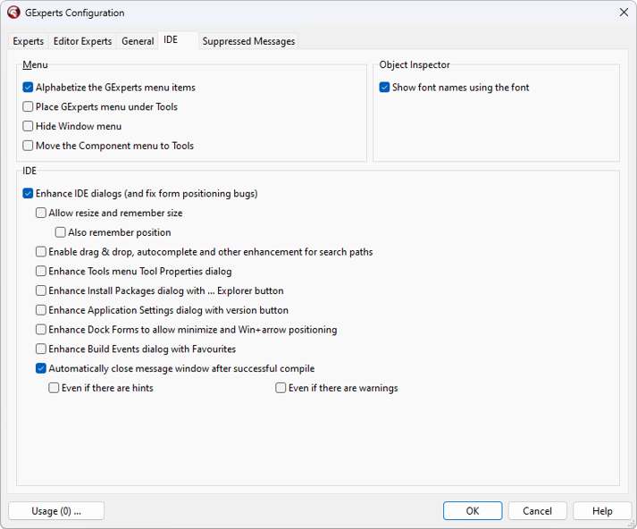

IDE Enhancements |
|
The GExperts IDE enhancements use low-level techniques to interface directly with the IDE and add often-requested features. You can disable all of the IDE enhancements at once using the "Disable IDE enhancements" checkbox.
Menu
You can also choose to sort the GExperts main menu items in alphabetical order and place the GExperts menu in the Tools menu instead of as a top-level menu (this option requires an IDE restart).
IDE
The Enhance IDE dialogs setting causes GExperts to perform the following enhancements: •Makes the options dialogs remember their last position onscreen •Makes the Environment Options and Project Options dialogs resizable (BDS 2006 or later only) •Saves the splitter position on the options dialogs (BDS 2006 or later only) •Increases all of the TComboBox DropDownCount values in the options dialog boxes to show at least 15 items •Collapses the Together node in the options dialog (BDS 2006 or later only) •Removes the product list horizontal scrollbar in the about box (BDS 2006 or later only) •Remembers the width of the text search dialog •Allows resizing the open picture dialogs for image lists and glyphs
You can also tell the object inspector to display font name dropdown selections using the actual font's face.  Tab Dock Hosts
When docking multiple IDE tool windows together, GExperts can force the Delphi 6/7 IDE to use multiline tabs when the tabs do not fit in the available space. The multiline tab setting can be changed on a per-dock host basis from the right-click menu of the tabs, or set as the default for all new dock hosts.
Component Palette
GExperts can also enhance the Delphi 6/7 component palette in many ways. You have the option of showing multiple rows of tabs to see more component categories at once. If this option is set, you can also enable the ScrollOpposite and RaggedRight properties of the tab control. Scroll opposite determines where previous rows of tabs in a multi-line tab control move when the user selects a tab in another row. When scroll opposite is checked, previous rows of tabs are moved to the bottom of the tab control. Ragged right determines whether or not incomplete rows of tabs stretch to fill the width of the tab control. See the VCL help for more information on these TCustomTabControl properties.
You can also choose to show the component palette tabs in a raised button style (see TCustomTabControl.Style) or a flat button style.
If you want quick access to lots of component categories, but don't want to enable the multi-line tab option, you can add the component categories to the palette's popup menu. Choosing one of these menu items selects the corresponding tab on the component palette. This option is also provided directly by the IDE in Delphi 6+.
Note: Starting with Delphi 8, there is no tabbed component palette, so these options do not apply. Note: If the multiline option causes component icons to paint improperly when switching forms, it is suggested that you enable the flat button mode, which should fix the problem.
|